Step 1 - Klik på din profil
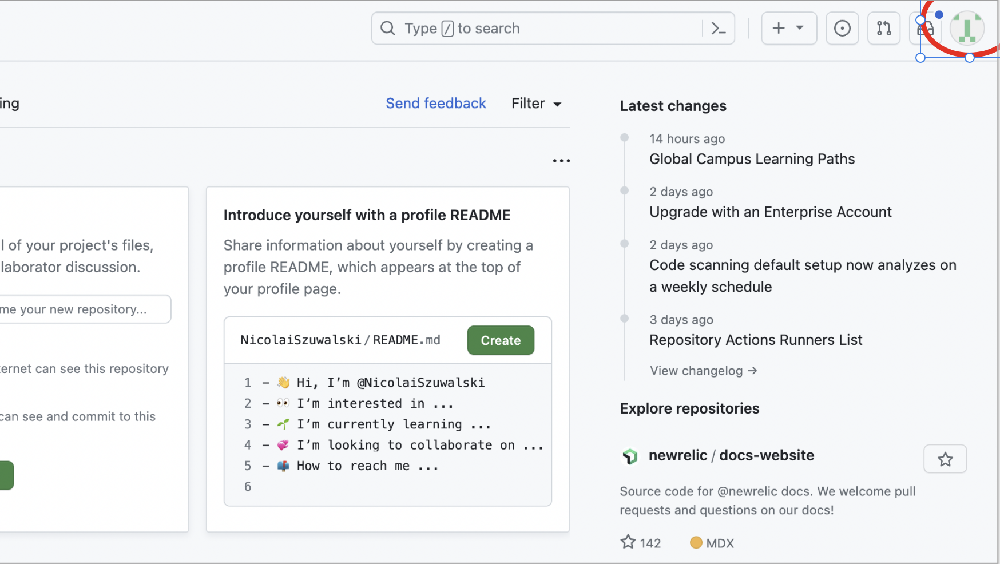
Step 2 - Klik på "Settings"
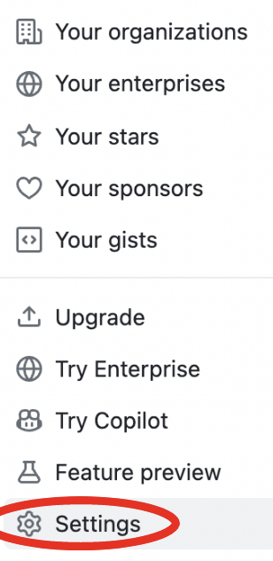
Step 3 - Klik på "New organization"
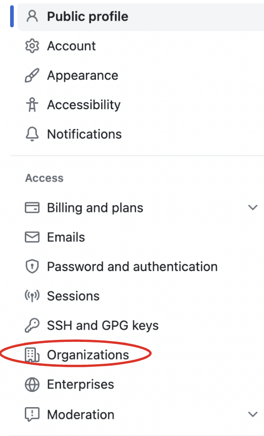
Step 4 - Vælg din pakke og følg anvisninger
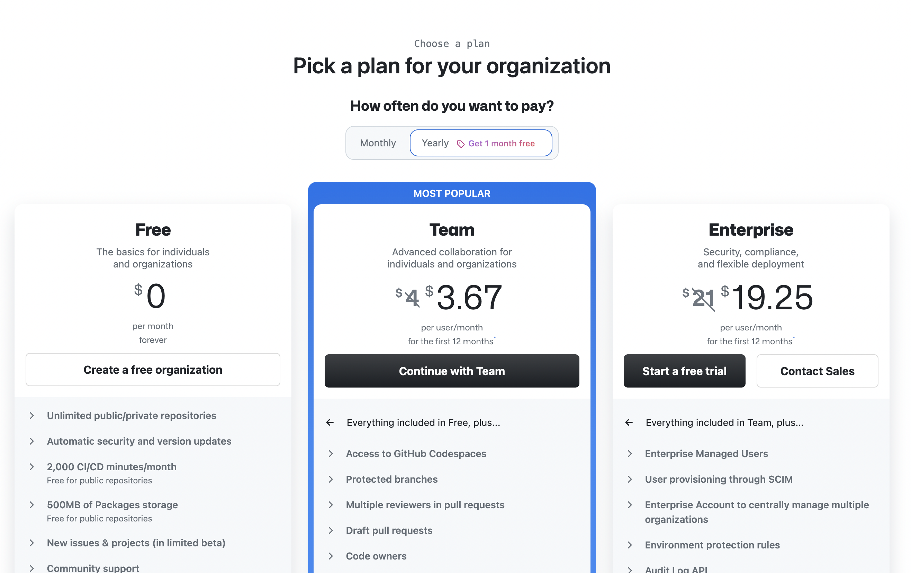
2. Hvordan tilmelder jeg folk til en organisation?
Step 1 - Klik på "Invite your first member"
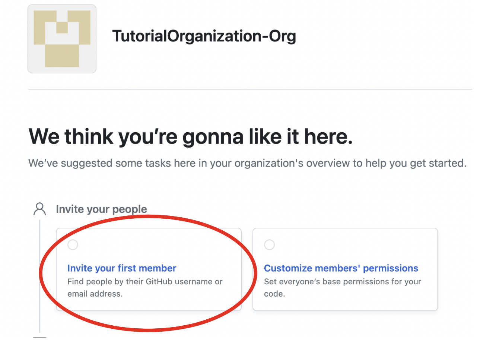
Step 2 - Klik på "Invite Member"
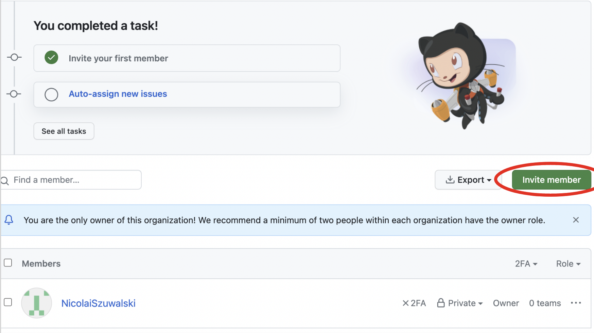
Step 3 - Søg på brugernavn og klik på "Invite"
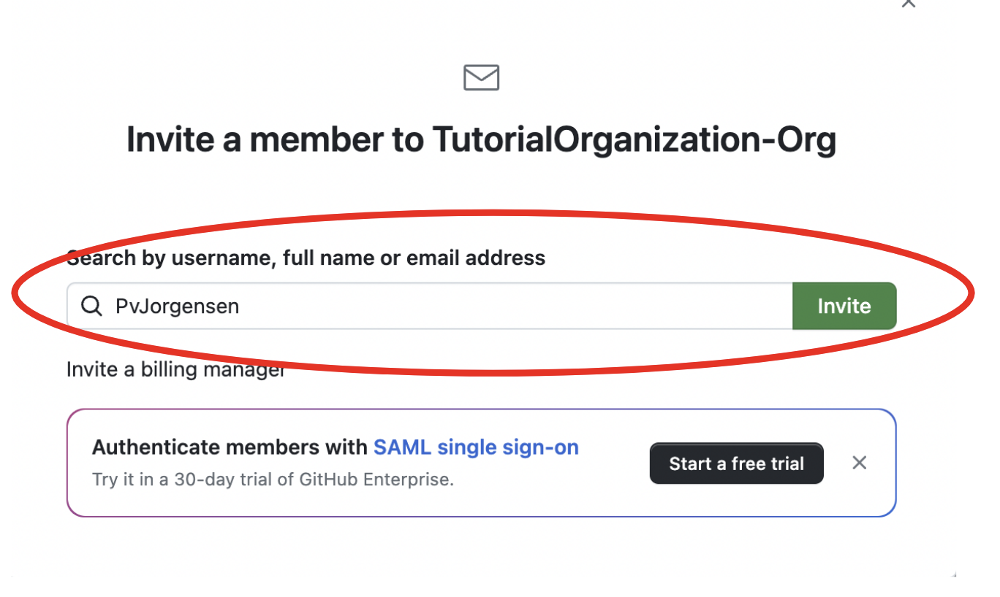
Step 4 - Vent på at personen, accepterer invitationen til organizationen...
3. Hvordan tildeler jeg adgang?
Step 1 - Klik på "Customize member's permissions"
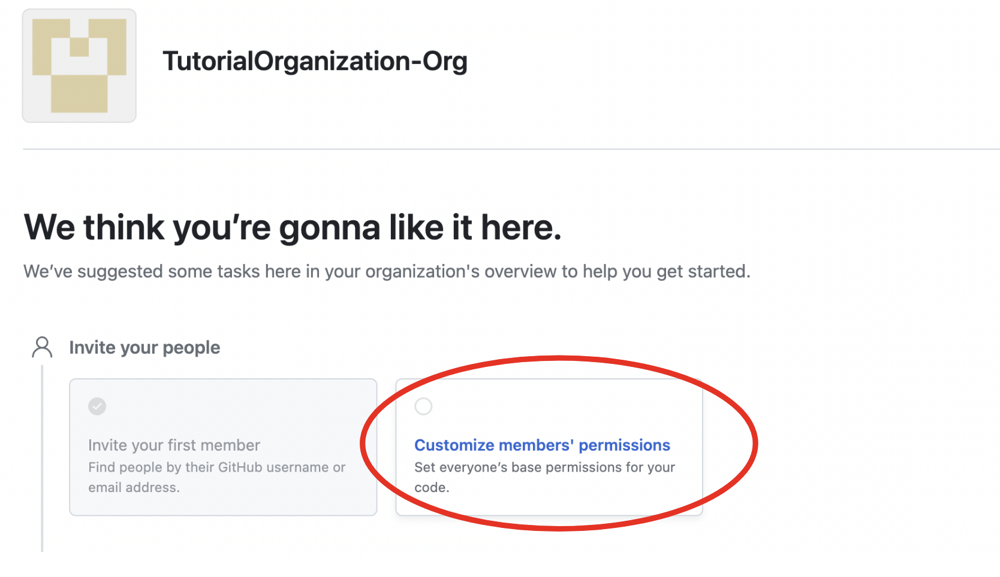
Step 2 - Vælg permissions for medlemmer af din organization
Base permissions er standard tilladelser for alle der bliver medlemmer af din organisation.
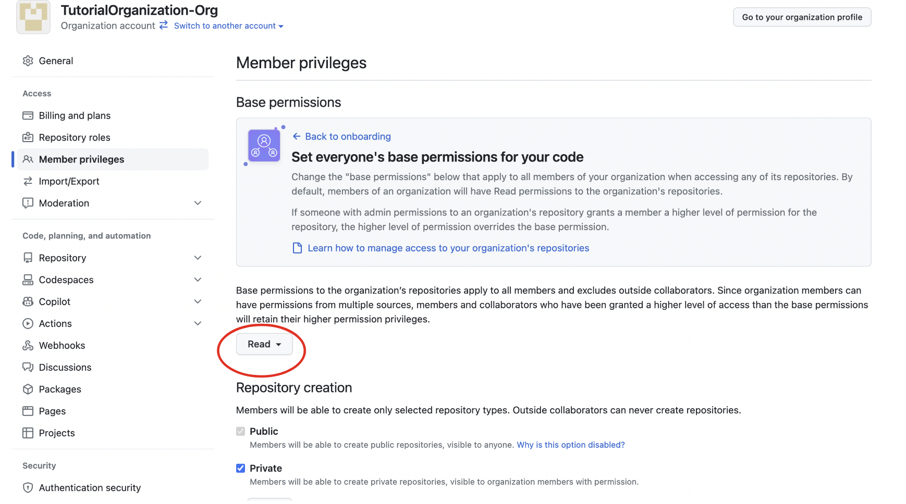
4. Hvordan lukker jeg en organistation?
Step 1 - Klik på din profilStep 2 - Klik på "Your organizations"
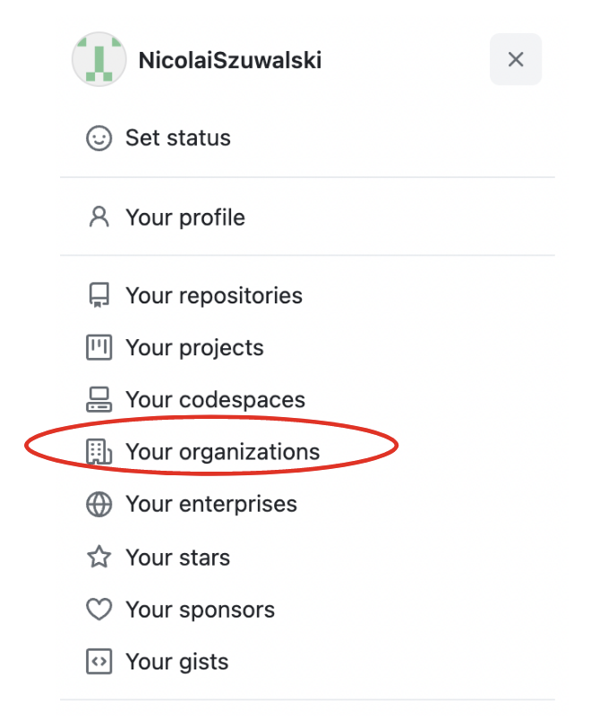
Step 3 - Vælg organistationen du vil slette og klik på "Settings"
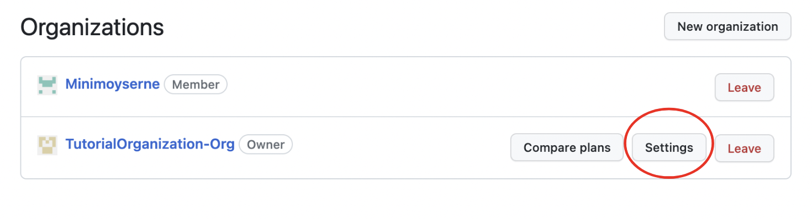
Step 4 - Klik på "Delete this organization"
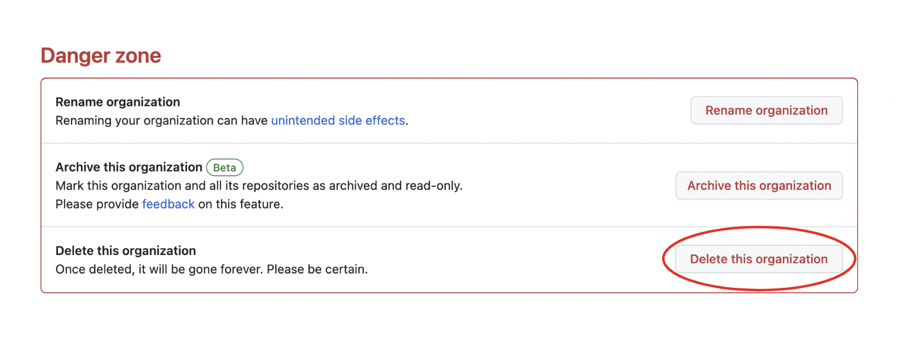